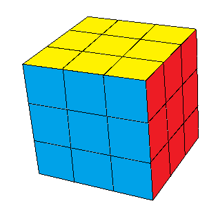

Nesta página você poderá aprender a resolver o cubo mágico com 7 passos simples.
O cubo foi inventado em 1974 por um arquiteto húngaro, Erno Rubik. Foi o brinquedo mais vendido na história e uma grande febre nos anos 80.
Atualmente quse 150 mil pessoas já participaram de competições oficiais de cubo promovidas pela World Cube Association (WCA).
Use o menu acima ou veja a playlist do Youtube.
Você pode também baixar uma apostila em formato PDF, para imprimir.